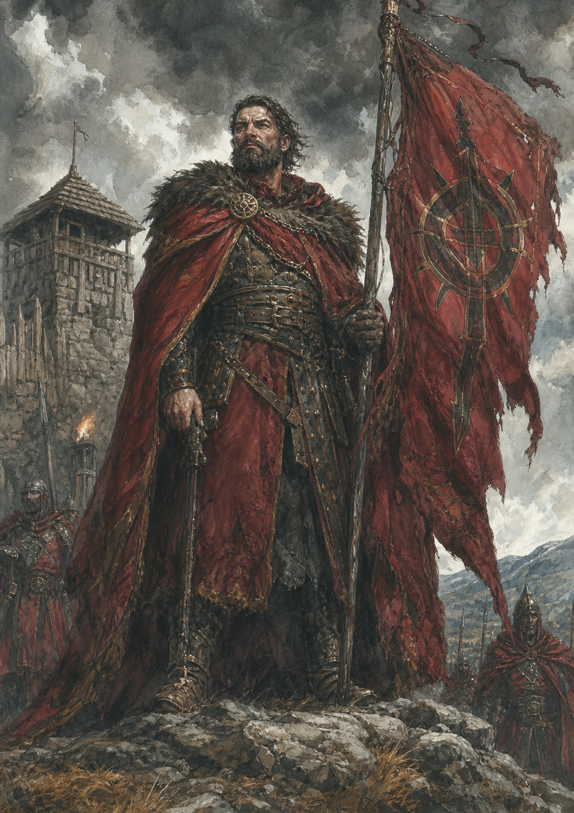
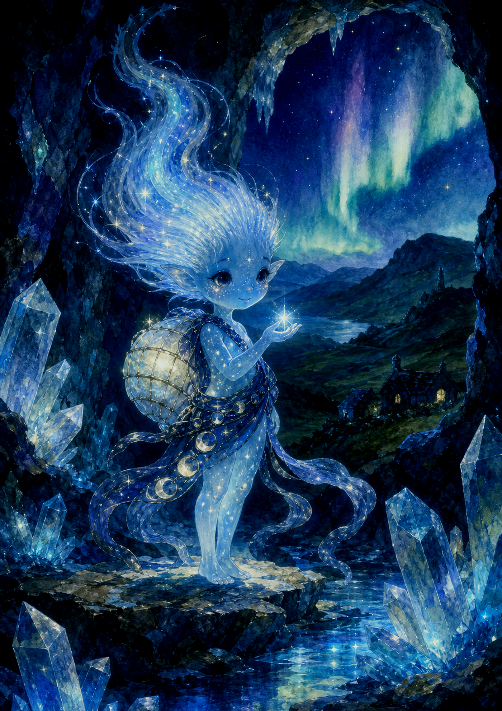
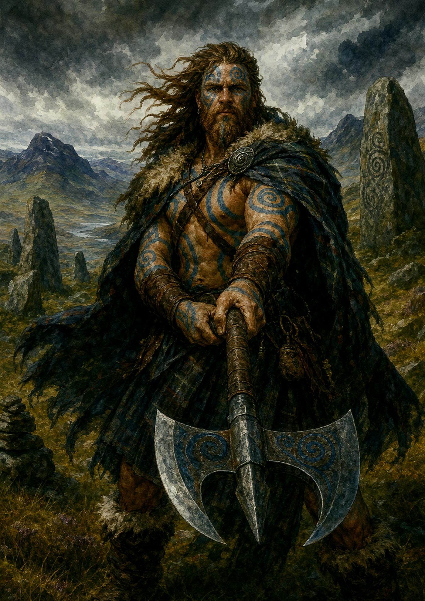
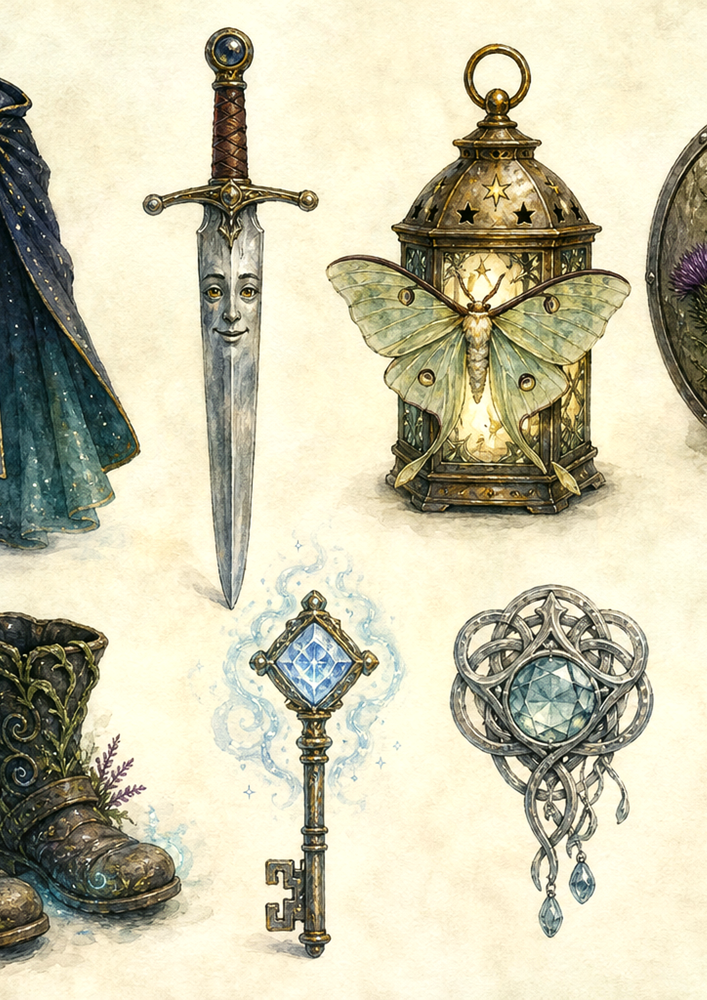
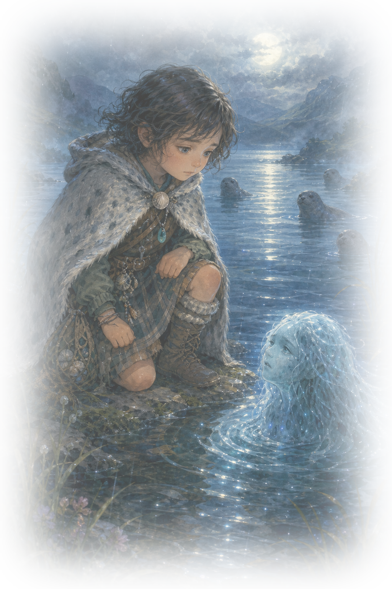
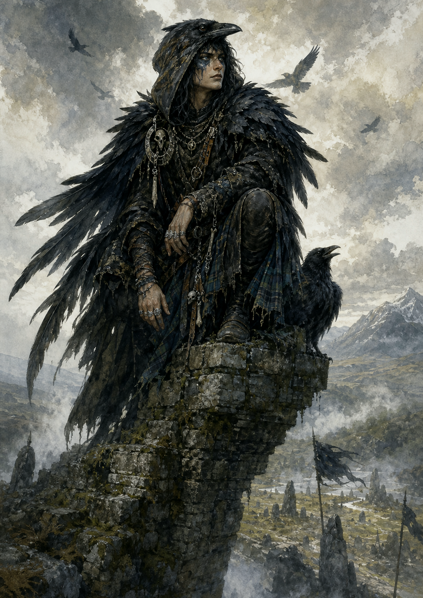
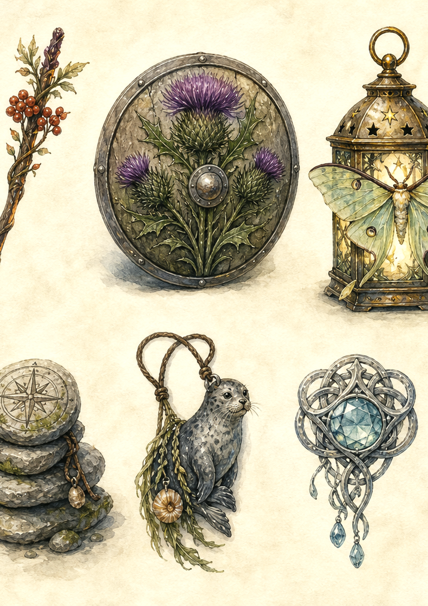
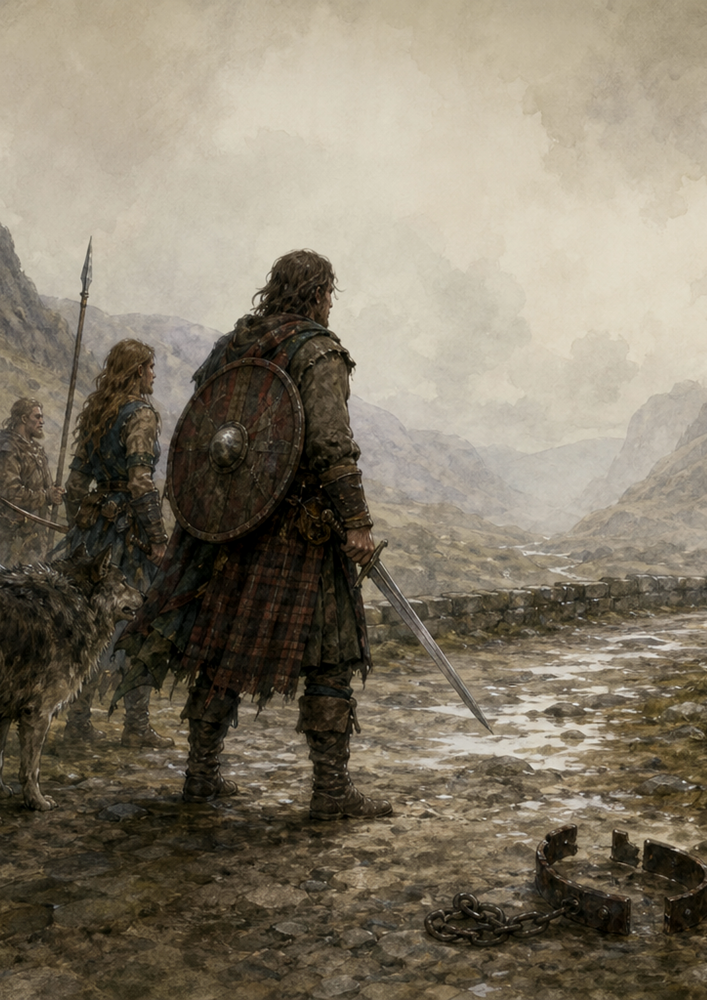
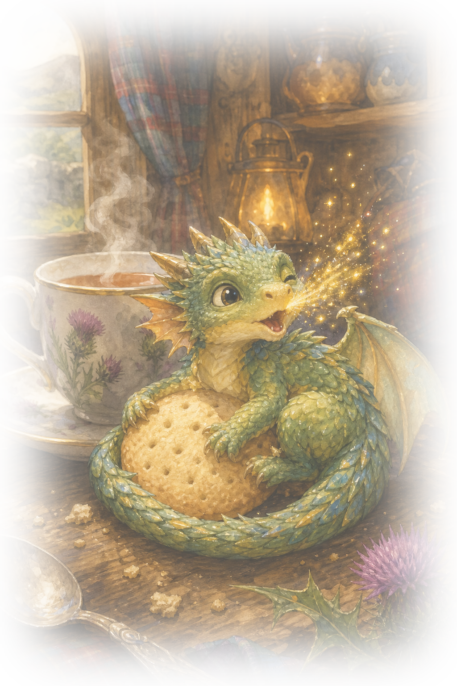
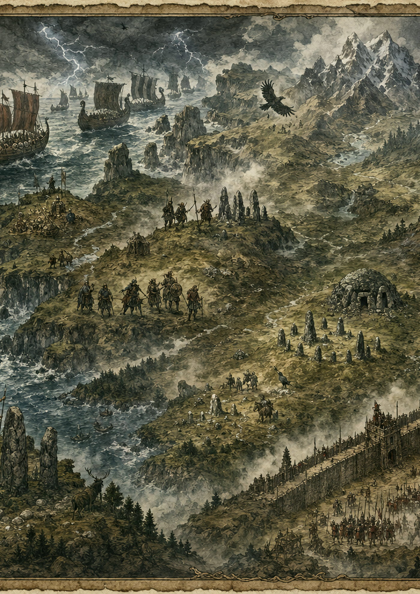

Adventures in Alba
A fairy-tale tabletop RPG for brave 5–7 year olds


The table rule
Adventures in Alba is played by talking together. A grown-up Guide describes a place, then each Adventurer says what their hero tries. The rules stay small so the story can stay big.
When to roll
Only roll when the answer is exciting. If an idea is safe and simple, it works. If it is tricky, roll one six-sided die.
| d6 + stat | What happens |
|---|---|
| 1–3 | A wobble: something funny or inconvenient happens. |
| 4–5 | A yes, but: success with a tiny cost or choice. |
| 6+ | A bright success: the hero does it well. |
The five stats
- Strength for lifting, holding, and protecting.
- Wis for noticing, comforting, and understanding.
- Agility for sneaking, catching, and balancing. Add Int for puzzles and Luck for fairy chances.


Kindreds of Alba
Glenfolk
Practical adventurers from cottages, crofts, and market lanes.
- Gift: once per adventure, remember a useful local clue.
- Look: tartan scarf, muddy boots, treasure pockets.
Thistle Fairy
Small bright folk with shimmer, manners, and secret paths.
- Gift: once per scene, notice nearby fairy magic.
- Look: petal cloak, star freckles, tiny crown.
Brownie Helper
Cozy fixers who tidy, mend, and improve small things.
- Gift: repair or improve one tiny object each scene.
- Look: apron, tool pouch, flour on nose.
Selkie-Born
Gentle loch-hearted heroes with moonlit dreams.
- Gift: understand water, weather, or a sad feeling.
- Look: soft seal-cloak, shell button, sea-glass charm.


Adventure jobs
Thistle Knight
Protects friends and stands bravely at the front.
Loch Scout
Finds paths, listens for clues, and spots hidden doors.
Song-Spark Bard
Uses music, jokes, and stories to lift everyone up.
Hearth Mage
Carries warm, safe magic: sparks, steam, tea, and tiny lights.
Beast Friend
Understands animals and earns trust with gentle patience.

Creature entry pattern

Moon-Kelpie Foal
A young water horse with silver mane and shy eyes. It wants someone to find the bell it lost under the reeds.
| At the table | Use this |
|---|---|
| Wants | Its moon-bell returned. |
| Helps by | Carrying one hero safely across shallow water. |
| Complication | It splashes when nervous and soaks the map. |
Guide note
For this age group, a creature should usually have a feeling before it has a fight. Scared, lonely, proud, sleepy, hungry, confused, or protective gives Adventurers something to respond to.

Character sheet style
This sheet is deliberately large, printable, and chunky. A five-year-old should be able to point at each box and explain it.
+__
+__ / +__
+__ / +__
When I am stuck, I can ask...